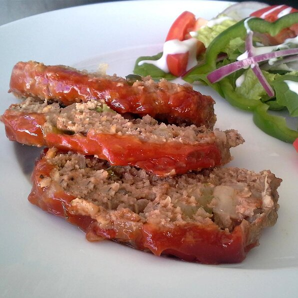

Meatloaf

Description
You can also make one large loaf in a 9x13-inch pan. Bake for 60 to 70 minutes before brushing with glaze; continue to bake as directed.
You may also use 1 pound ground veal and omit the pork.
Ingredients
- cooking spray
- 1 onion, chopped
- 2 cloves garlic, minced
- 2 teaspoons prepared mustard
- 2 teaspoons Worcestershire sauce
Steps
- Combine ketchup, brown sugar, and cider vinegar in a bowl; mix well.
- Preheat oven to 350 degrees F (175 degrees C).
Spray two 9x5-inch loaf pans with cooking spray or line with aluminum foil for easier cleanup (see Cook's Note).
- Place onion and green pepper in covered microwave container and cook until softened, 1 to 2 minutes. Set aside to cool.
- Divide meatloaf mixture in half and pat half of mixture into each prepared loaf pan. Brush loaves with half of the glaze; set remainder of glaze aside.